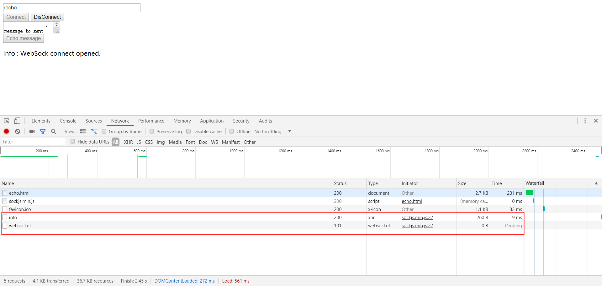
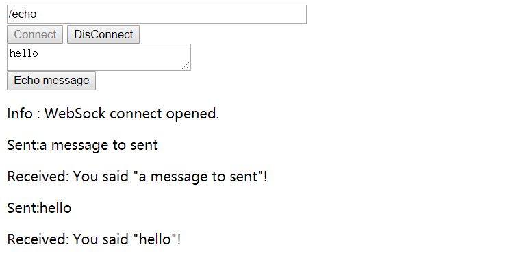

准备工作
gradle引入相关依赖：
“org.springframework.boot:spring-boot-starter-websocket”,
“org.springframework.boot:spring-boot-starter-json”
新建一个接口EchoService，用来对消息进行处理
1
2
3
4
5
| public interface EchoService {
//接受消息，然后处理返回处理结果
String getMessage(String message);
}
|
然后定义一个实现类：
1
2
3
4
5
6
7
8
9
10
11
12
13
14
| public class DefaultEchoService implements EchoService {
private final String echoFormat;
public DefaultEchoService(String echoFormat){
this.echoFormat = (null != echoFormat) ? echoFormat : "%s";
}
@Override
public String getMessage(String message) {
//消息处理就是简单的消息格式化
return String.format(this.echoFormat, message);
}
}
|
定义Handler
新建一个Handler，EchoWebSocketHandler springboot websocket 提供了一个简单的文本处理器TextWebSocketHandler，EchoWebSocketHandler继承TextWebSocketHandler。
1
2
3
4
5
6
7
8
9
10
11
12
13
14
15
16
17
18
19
20
21
22
23
24
25
26
27
| public class EchoWebSocketHandler extends TextWebSocketHandler {
private EchoService echoService;
public EchoWebSocketHandler(EchoService echoService){
this.echoService = echoService;
}
@Override
public void afterConnectionEstablished(WebSocketSession session) throws Exception {
//连接建立的时候，打印信息
System.out.println("建立连接");
}
@Override
public void handleTransportError(WebSocketSession session, Throwable exception) throws Exception {
//出现异常关闭连接
session.close(CloseStatus.SERVER_ERROR);
}
@Override
protected void handleTextMessage(WebSocketSession session, TextMessage message) throws Exception {
//接受消息，然后对其进行处理，返回处理结果
String echoMessage = this.echoService.getMessage(message.getPayload());
session.sendMessage(new TextMessage(echoMessage));
}
}
|
在 MyApplication上加入注解：@EnableWebSocket
修改 MyApplication让其继承WebSocketConfigurer接口，然后重写registerWebSocketHandlers方法：
然后MyApplication会新增如下方法：
1
2
3
4
5
6
7
8
9
10
11
12
13
14
15
16
17
18
19
20
21
22
23
24
25
26
27
28
29
30
31
32
33
34
35
36
37
| @SpringBootApplication
@EnableWebSocket
public class MyApplication implements WebSocketConfigurer {
private static final Logger logger = LoggerFactory.getLogger(MyApplication.class);
public static void main(String[] args) {
SpringApplication.run(MyApplication.class,args);
/*SpringApplication application = new SpringApplication();
application.setBannerMode(Banner.Mode.OFF);//关闭banner
application.run(args);*/
}
@PostConstruct
public void myLog(){
logger.trace("Trace Message");
logger.debug("Debug Message");
logger.info("Info Message");
logger.warn("Warn Message");
logger.error("Error Message");
}
@Override
public void registerWebSocketHandlers(WebSocketHandlerRegistry webSocketHandlerRegistry) {
webSocketHandlerRegistry.addHandler(webSocketHandler(), "/echo").withSockJS();
}
@Bean
public EchoService echoService(){
return new DefaultEchoService("You said \"%s\"!");
}
@Bean
public WebSocketHandler webSocketHandler(){
return new EchoWebSocketHandler(echoService());
}
}
|
页面交互文件
然后我们新建一个html交互页面，在工程的resources下新建一个static目录，注意static是springboot约定好的名称。
然后在其下新建echo.html:
1
2
3
4
5
6
7
8
9
10
11
12
13
14
15
16
17
18
19
20
21
22
23
24
25
26
27
28
29
30
31
32
33
34
35
36
37
38
39
40
41
42
43
44
45
46
47
48
49
50
51
52
53
54
55
56
57
58
59
60
61
62
63
64
65
66
67
68
69
70
71
72
73
74
75
76
77
78
79
80
81
82
83
84
85
86
87
88
89
90
91
92
93
94
95
96
97
| <html>
<script src="https://cdn.jsdeliver.net/sockjs/0.3.4/sockjs.min.js"></script>
<script type="text/javascript">
var ws = null;
function setConnected(connected) {
document.getElementById("connect").disabled = connected;
document.getElementById("disconnect").disabled = !connected;
document.getElementById("echo").disabled = connected;
}
function connect() {
var target = document.getElementById("target").value;
ws = new SockJS(target);
ws.onopen = function () {
setConnected(true);
log("Info : WebSock connect opened.");
};
ws.onmessage = function (event) {
log('Received: ' + event.data);
};
ws.onclose = function () {
setConnected(false);
log('Info: WebSocket connection close.')
};
function disconnect() {
if (ws != null){
ws.close();
ws = null;
}
setConnected(false);
}
function echo() {
if (ws != null){
var message = document.getElementById('console');
log('Sent:' + message)；
s.send(message);
}else {
alert('WebSocket connect not establish, please connect.');
}
}
function log(message) {
var console = document.getElementById("console");
var p = document.createElement('p');
p.style.wordWrap = 'break-word';
p.appendChild(document.createTextNode(message));
console.appendChild(p);
while (console.childNodes.length > 25) {
console.removeChild(console.firstChild);
}
console.scrollTop = console.scrollHeight;
}
}
</script>
<body>
<div>
<div id="connect-container">
<div>
<input id="target" type="text" size="40" style="width:350px;" value="/echo" />
</div>
<div>
<button id="connect" onclick="connect();">Connect</button>
<button id="disconnect" disabled="disabled" onclick="disconnect();">DisConnect</button>
</div>
<div>
<textarea id="message" >
a message to sent
</textarea>
</div>
<div>
<button id="echo" onclick="echo();" disabled="disabled"> Echo message</button>
</div>
<div id="console-container">
<div id="console"></div>
</div>
</div>
</div>
</body>
</html>
|
验证
浏览器输入：http://localhost:9090/echo.html

可以看到http://localhost:9090/echo/info返回一个200的状态，这是一个测试，然后
ws://localhost:9090/echo/546/jgnuowqd/websocket 的状态101，表示协议转换，升级之后连接就建立起来了。
收发消息：
